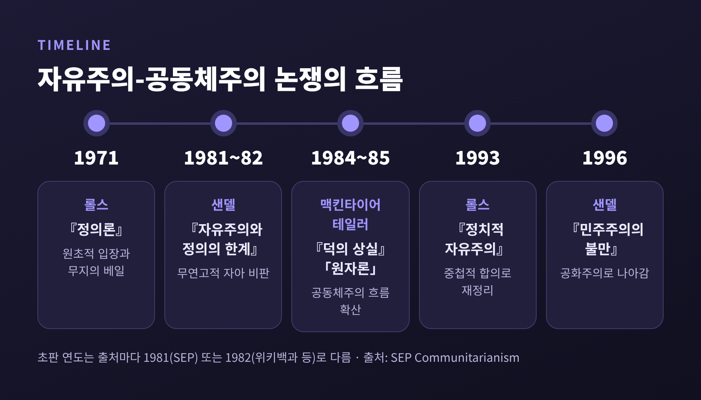
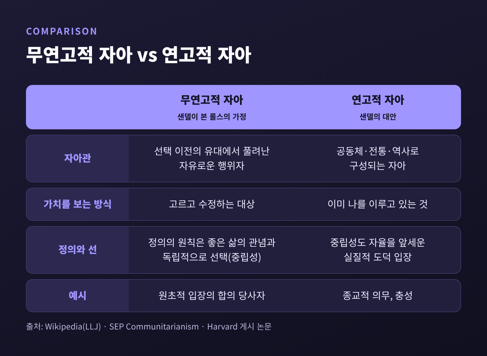
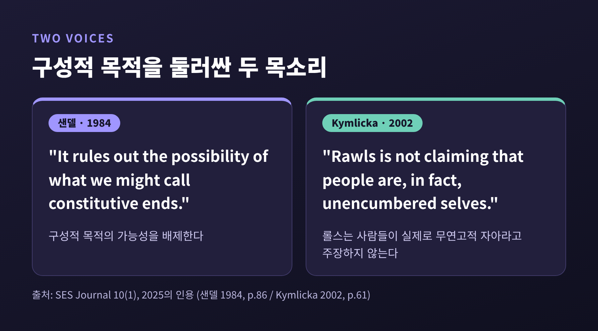

3줄 요약
오늘은 마이클 샌델의 연고적 자아 개념을 중심으로 롤스 『정의론』에 대한 공동체주의의 비판을 살펴보려 합니다.
그 가정이 왜 문제로 지목되었는지 따라가 보겠습니다.
롤스와 자유주의 쪽의 재반론도 함께 놓고 보겠습니다.
출발점은 1971년 롤스의 『정의론』입니다.
스탠퍼드 철학백과(SEP)의 공동체주의 항목은 이 이론을 겨냥한 비판적 반응으로 공동체주의를 설명합니다.
이어서 샌델의 『자유주의와 정의의 한계』가 나왔고, 맥킨타이어의 『덕의 상실』(1984), 테일러의 「원자론」(1985)이 뒤를 이었습니다.
『자유주의와 정의의 한계』의 초판 연도는 출처마다 다릅니다.
SEP 참고문헌은 1981년, 위키백과와 2025년 학술 논문은 1982년으로 적고 있습니다. 이 글에서는 '1981~82년'으로 병기하겠습니다.
출판사는 케임브리지대학출판부이고, 1998년에 새 서문을 붙인 개정 2판이 나왔습니다.
한 가지 짚어둘 점이 있습니다.
'공동체주의자'라는 이름은 밖에서 붙인 것입니다.
SEP에 따르면 맥킨타이어, 샌델, 테일러, 왈저는 스스로를 공동체주의자라 부르지 않았습니다. 샌델도 그 꼬리표는 불편해한다고 알려져 있습니다.

샌델의 비판을 이해하려면 롤스의 장치부터 알아야 합니다.
SEP의 롤스 항목은 원초적 입장을 이렇게 풀이합니다.
"공정한 협력의 조건은 무엇인가"라는 질문을 "자유롭고 평등한 시민이 공정한 조건에서 어떤 조건에 합의하겠는가"로 바꾸는 장치입니다.
무지의 베일은 이 합의에서 인종, 계급, 성별, 타고난 재능 같은 임의적 사실을 걸러냅니다.
합의 당사자는 사회에 대한 일반적 사실과 시민들이 서로 다른 포괄적 교설을 가진다는 점은 압니다. 그러나 자신이 누구인지는 모릅니다.
여기서 나오는 것이 두 원칙입니다.
첫째, 모든 사람은 동등한 기본적 자유의 체계에 대한 불가침의 권리를 가집니다.
둘째, 불평등은 공정한 기회균등 아래 열린 직위에 결부되어야 하고, 가장 불리한 사람들에게 최대 이익이 되어야 합니다. 이것이 차등원칙입니다.
첫째 원칙이 둘째에 우선합니다.
샌델은 이 장치가 특정한 자아관에 기대고 있다고 봅니다.
위키백과의 정리에 따르면 롤스의 자아는 사회적·역사적·공동체적 유대와 무관한 자유롭고 합리적인 행위자입니다. 샌델은 이를 '무연고적(unencumbered) 자아'라고 불렀습니다.
반대편에 있는 것이 연고적 자아입니다.
우리의 정체성은 공동체, 전통, 역사에 의해 구성적으로 형성된다는 생각입니다.
SEP도 샌델의 논지를 비슷하게 요약합니다. 가족이나 종교 같은 애착이 자아를 이루고 있어서 그것을 내려놓는 데는 큰 대가가 따르며, 그런 애착은 대개 선택해서 얻은 것이 아니라는 설명입니다.
여기서 선택과 구성의 차이가 드러납니다.
무연고적 자아에게 가치는 고르는 대상입니다.
연고적 자아에게 가치는 이미 나를 이루고 있는 것입니다.
샌델의 예시는 종교적 의무와 충성입니다. 하버드 쪽에 게시된 논문이 소개하는 바로는, 이런 가치는 '삶의 방식 선택'으로 다시 쓸 수 없는 것들입니다.
2025년 논문이 인용한 1984년 글의 한 구절이 이 핵심을 압축합니다.
"It rules out the possibility of what we might call constitutive ends." (샌델, 1984, p.86)
구성적 목적의 가능성을 배제한다는 뜻입니다.

2025년 SES Journal 논문은 1984년 글 「절차공화국과 무연고적 자아」에서 전개된 샌델의 논증을 세 가지로 정리합니다.
첫째, 차등원칙이 재능 있는 사람을 수단으로 대한다는 지적입니다.
둘째, 롤스의 인격론이 불완전하다는 지적입니다.
셋째, 공동체 삶에서 형성되는 가치를 놓친다는 지적입니다.
여기에 중립성 비판이 겹칩니다.
롤스는 정의의 원칙이 좋은 삶의 관념과 독립적으로 선택되어야 한다고 봅니다.
샌델은 이 중립성 자체가 개인의 자율을 앞세우는 실질적 도덕 입장이라고 반박합니다. 자유주의가 은연중에 자기 나름의 선 관념을 들여온다는 것입니다.
하버드 쪽 논문에 따르면 샌델은 미국 제도가 '특정 목적보다 공정한 절차의 우선성'을 내세우는 의무론적 자유주의를 구현한다고 봅니다. 이것이 '절차공화국'입니다.
대안으로는 시민 덕성을 기르는 형성적 정치, 곧 공화주의를 제시합니다.
공동체와 책임의 문제도 여기서 이어집니다.
내가 선택하지 않은 가족, 지역, 나라 속에서 형성된 정체성이라면, 그 안에서 지는 책임도 선택만으로 설명되지 않을 것입니다.
다만 이 지점의 구체적 사례들은 이번에 확인한 1차 자료의 범위를 넘어서므로, 여기서는 논지의 방향만 짚어 두겠습니다.
예전에는 자아가 쟁점이었습니다. 지금은 논쟁의 무게가 공적 담론과 정치로 옮겨와 있습니다. 그 사이에 자유주의 진영의 응답이 쌓였습니다.
첫째 응답은 '장치일 뿐'이라는 것입니다.
롤스는 원초적 입장이 "순수하게 가설적인 상황"이라고 했습니다(『정의론』, 1999 개정판 p.3).
Baker(1985)는 롤스가 제한된 목적을 위해 제한된 인격 개념을 만들었다고 보았습니다.
Kymlicka는 "롤스는 사람들이 실제로 무연고적 자아라고 주장하지 않는다"고 썼고(2002, p.61), 샌델이 존재론적 개인주의와 방법론적 추상을 혼동했다고 보았습니다.
둘째 응답은 해석에 관한 것입니다.
롤스가 "자아는 그것이 긍정하는 목적에 앞선다"고 한 것은 자아가 현재의 욕구와 같지 않다는 뜻이지, 모든 유대와 완전히 분리되어 있다는 뜻이 아니라는 반론입니다.
SEP도 『정의론』 3부가 정의로운 자유주의적 자아를 길러내는 심리적·사회적 조건을 다룬다며, 원자적 자아 비판이 롤스에게 그대로 들어맞지는 않는다고 봅니다.
셋째 응답이 『정치적 자유주의』(1993)입니다.
이 책은 컬럼비아대학출판부에서 나왔고, 2005년에 확장판이 나왔습니다.
핵심은 정의관을 포괄적 교설과 구별되는 '정치적' 구상으로 세운 것입니다. 여러 합당한 교설이 각자의 이유로 같은 정치적 원칙을 지지하는 상태를 중첩적 합의라고 부릅니다.
롤스는 1985년 「공정으로서의 정의: 정치적이지 형이상학적이지 않은」(Philosophy & Public Affairs 14권 3호, 223~251쪽)에서도 이 방향을 보였습니다. 다만 이 논문의 본문은 이번에 열람하지 못했습니다.
법학자 투슈넷은 1997년 서평에서 이렇게 평했습니다.
『정치적 자유주의』는 시민이 정치 원칙에 이르기 위해 자신의 도덕·종교 교설을 접어둘 필요가 없음을 보이려 했고, 샌델은 이 논증 대부분을 오해한다는 것입니다.
그래서 초기 비판은 이제 큰 힘이 없다고 보았습니다.
이 논쟁을 롤스의 승리로만 정리하기는 어렵습니다.
투슈넷 자신도 단서를 답니다. 원칙이 합당한 포괄적 교설 안에서 도출되지 않는다면 샌델의 반론이 성립할 수 있다는 것입니다. 노예제와 낙태 같은 사례에서는 도덕 교설이 괄호 치기를 압도할 수 있다고도 지적합니다.
또 하나는 비판의 성격입니다.
투슈넷은 샌델의 진짜 표적이 롤스의 철학보다, 도덕과 종교를 지나치게 비워 버리는 공적 담론과 정치문화라고 읽습니다.
Yongmevittaya(2003)도 샌델의 표적이 롤스의 형이상학이 아니라 선택 중심 행위자 모델 뒤의 도덕 추론이라며 샌델을 옹호합니다.
샌델 쪽에도 약점이 지적됩니다.
Dagger(1999)는 시민 형성을 강조한 점은 타당하다고 보면서도, 이 자아관을 강하게 공격하고 소속의 의무를 앞세워 자유주의와 공화주의를 적대시하면 샌델이 기대는 자유주의 원칙마저 훼손할 수 있다고 경고합니다.
샌델 스스로 『자유주의와 정의의 한계』 2판 서문에서 이 책이 공동체주의 비판이라기보다 자유주의가 전제하는 자아에 대한 비판이라고 밝혔다는 소개도 있습니다(2차 인용).
한계도 밝혀 둡니다.
이 글은 샌델과 롤스의 원저를 직접 인용한 것이 아니라 학술 항목과 논문의 정리에 기대고 있습니다. 쪽수가 붙은 구절은 모두 2차 자료가 전하는 것입니다.

정리하면 이렇습니다.
연고적 자아는 선택 이전에 이미 나를 이루고 있는 유대가 있다는 생각이고, 그 반대편 가정은 그 유대를 괄호 치고 정의를 설계하려는 장치입니다.
두 입장이 끝내 갈라지는 곳은 그 장치를 '방법'으로 읽느냐 '인간관'으로 읽느냐입니다.
"자아는 선택하는 존재이기 이전에, 이미 어딘가에 속한 존재인가."
이 물음에 한 번에 답하기는 어렵습니다.
다만 내가 선택하지 않은 가족과 공동체가 지금의 나를 만들었다는 사실을 인정하는 순간, 정의와 책임을 이야기하는 방식이 달라질 것입니다.
그렇다면 정의로운 사회의 설계도에, 내가 누구인지는 어디까지 들어가야 할까요. 그 답을 각자의 자리에서 계속 찾아보시길 권합니다.